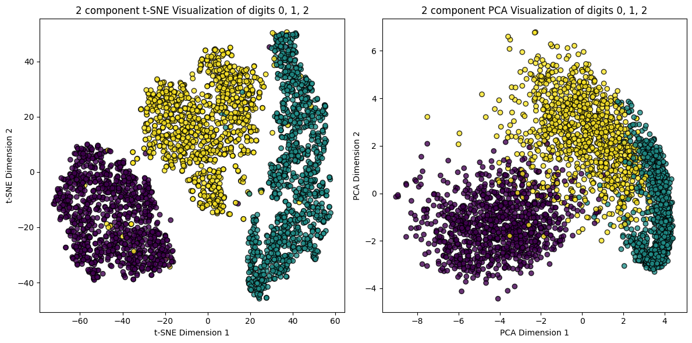
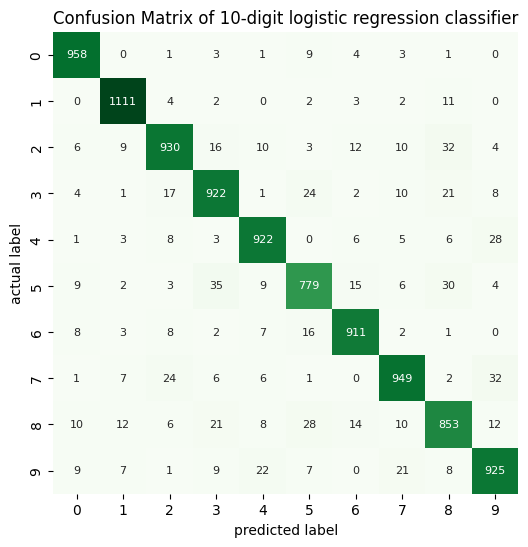
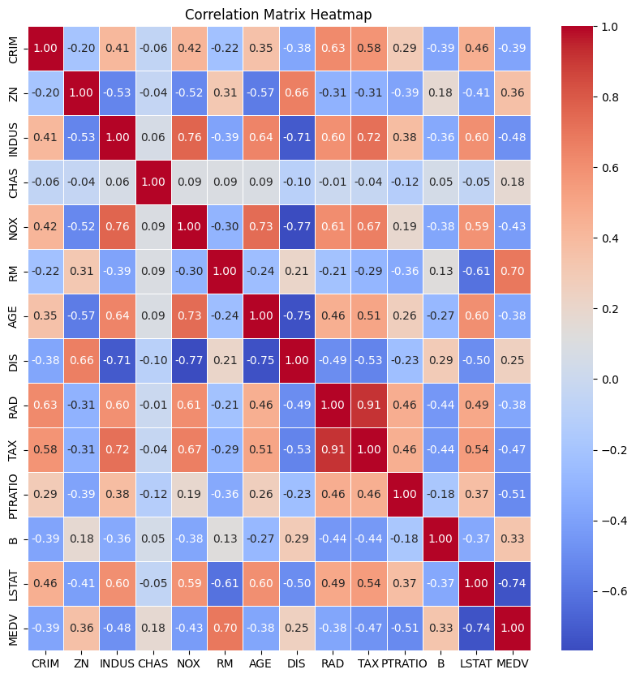

Fundamentals of Machine Learning
View project on GitHubBuilt a Python-based logistic regression classifier using scikit-learn to classify handwritten digits. Implemented advanced data cleaning, feature selection, and hyperparameter tuning to optimize results.
Implemented dimensionality reduction using techniques such as PCA, t-SNE and UMAP. Discussed the nuances of these techniques for both data visualisation and preprocessing tasks.


